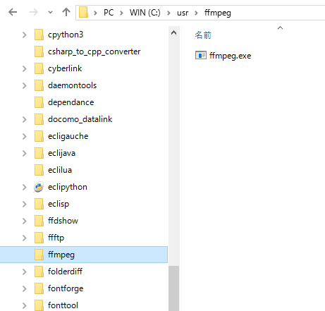

ここでは、手持ちのムービーや、他のゲームのムービーなどを、
「天翔記HD・創造・天道・革新・天下創世」で利用可能なフォーマットへと変換する例を示します。
「天翔記HD・創造・天道・革新・天下創生」のムービー形式は、基本的には同じであり、
Windows Media Video(.wmv)によるcodec、および、コンテナとなっています。
ですので、基本的には、「.wmv」へと変換できるアプリケーションであれば、好みのツールで変換しても大丈夫です。
変換する方法はたくさんありますが、 ここでは、
変換元のムービーの対応形式として、「圧倒的な種類のフォーマットに対応している」という点、
そして、広い認知度という点も考慮し、「FFmpeg」を利用した方法を解説します。
FFmpegを利用する。
FFmpegはコマンドラインツールであり、そのままだと面倒くさいので、
バッチファイルを利用する。
という、わりとよくある、「あるあるコース」を解説します。
まずは、該当ページからffmpegをダウンロードします。
「ffmpeg-N-*****-*********-win64-gpl.zip」
を解凍すると、実はファイルやディレクトリが沢山あります。
しかし、必要なのファイルは「bin」フォルダの中にある「ffmpeg.exe」だけです。
このffmpeg.exeを適当なツールっぽいフォルダに移動し、以後これを利用するようにします。
